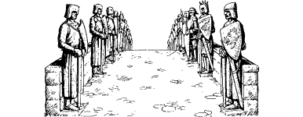

140
The river track runs parallel to the Kinam for nearly a mile before bearing east and entering a coppice of tall conifers. On the far side of this cultivated wood you come to a bridge across a wide, fast-flowing tributary of the Kinam. The parapet of the bridge is lined with imposing stone statues, each depicting a past lord of Scade Manor.
{kind=link}

In the distance you can now see Castle Tranius. Its curtain wall and fortified barbican are illuminated by torches which were lit, as is the custom here, an hour before sunset. On arriving at the gatehouse, Lord Nathor and the rest of you are welcomed into the castle keep where your horses are attended to. A trio of Knight Tranius’ guards come to escort you to his hall and, as you follow them to the castle’s upper chambers, Nathor asks after Guetor the Boarmaster, the leader of Knight Tranius’ hunt.
‘He’s no longer with us,’ answers one of the guards, tersely. ‘He’s gone away.’
Before Nathor can enquire further as to the whereabouts of his old hunting instructor, you are ushered into the castle’s main hall and asked to wait a few minutes for Knight Tranius to arrive.